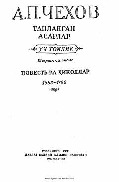

TAAnton Chexovning eng sara va mashhur hikoyalaridan iborat birinchi jild.
Ushbu kitob buyuk rus yozuvchisi Anton Chexovning tanlangan asarlari to'plamining birinchi jildi bo'lib, uning mashhur hikoyalarini o'z ichiga oladi. To'plamga yozuvchining 1883-1890 yillarda yozilgan sara badiiy hikoyalari kiritilgan. Asarlar insoniy xarakterlar, jamiyatdagi illatlar va kundalik turmush voqealarini o'tkir hajviy va teran psixologik ruhda ochib beradi.